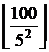
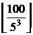

Найти
количество нулей в конце записи факториала числа n.
Вход. Одно
число n (1 ≤ n ≤ 2*109).
Выход. Количество
нулей в конце записи n!
|
Пример входа |
Пример выхода |
|
7 |
1 |
математика
Факториал
числа n равен произведению чисел от 1
до n. Ноль в конце произведения
появляется в результате перемножения 2 и 5. Но поскольку при разложении на
простые множители числа n! двоек
больше чем пятерок, то количество нулей в конце n! равно количеству пятерок в разложении n! на простые множители. Это число равно
+ + + …
Суммирование
происходит до тех пор, пока очередное слагаемое не станет равным 0.
Пример
Найдем количество нулей, которыми
заканчивается 100!
+  +  + … = 20 + 4 = 24
Третье слагаемое уже равно нулю, так
как 100 < 53 = 125.
Реализация алгоритма
Читаем значение n.
scanf("%d",&n);
Вычисляем по формуле ответ.
res = 0;
while(n > 0)
{
n /= 5;
res += n;
}
Выводим
количество нулей в конце n!
printf("%d\n",res);